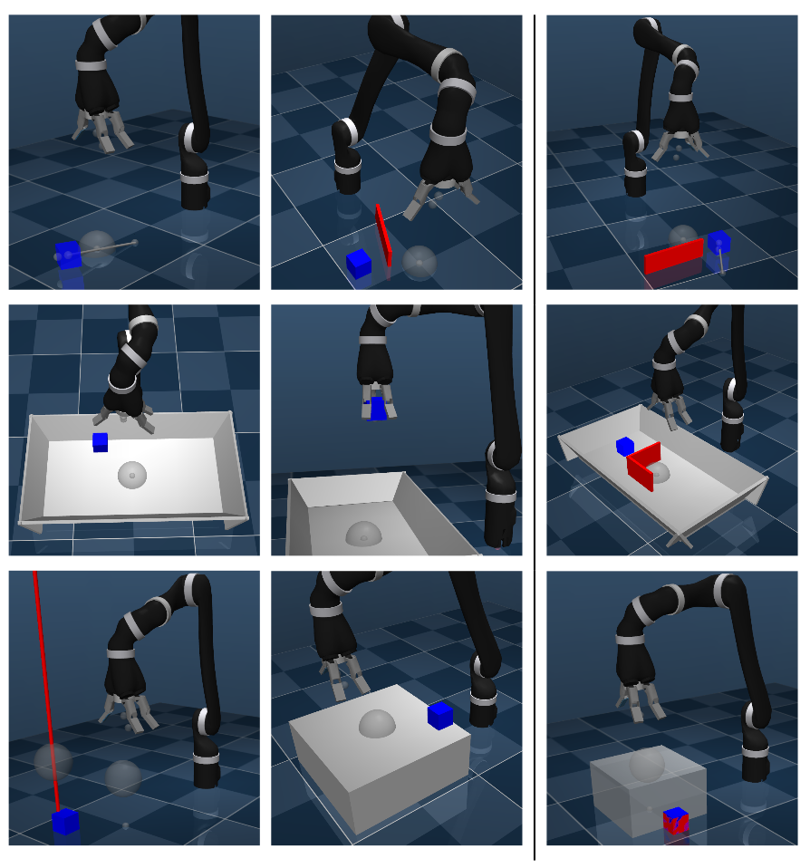
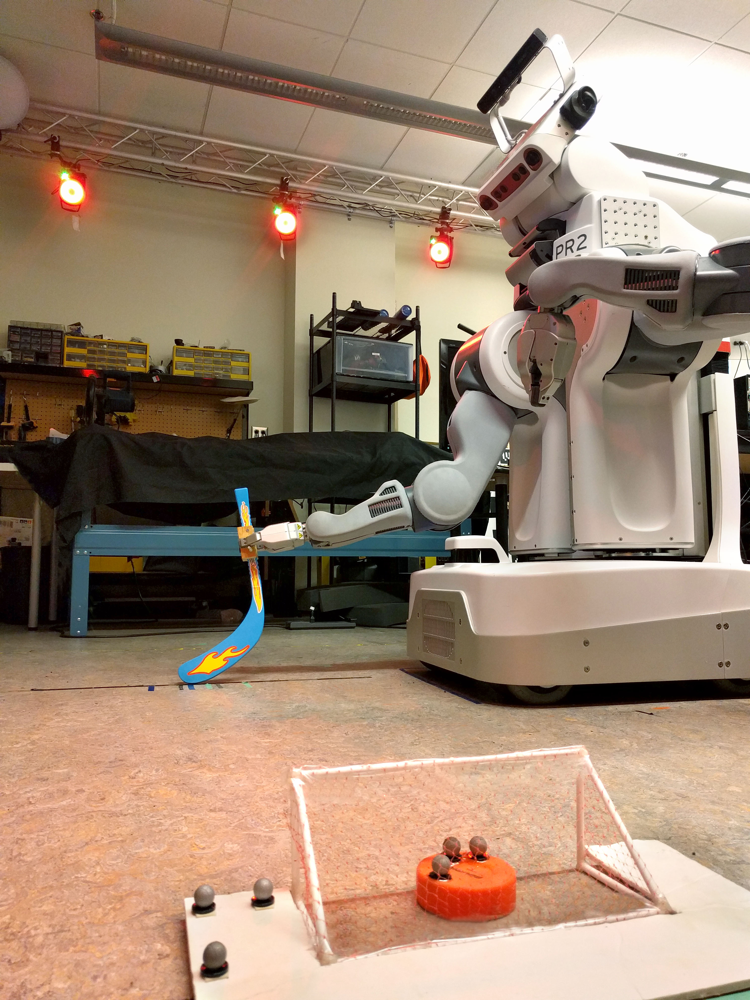
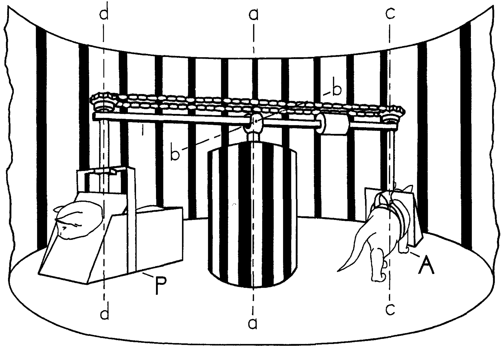
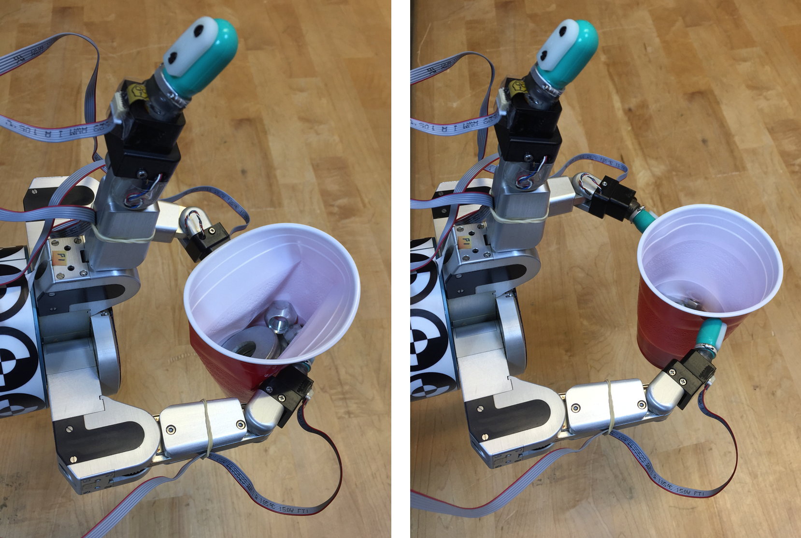
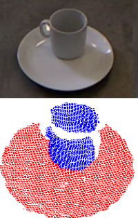

Research
(Deep) Reinforcement and Imitation Learningfor robotics
In my research on Deep Reinforcement and Imitation Learning, I focus on how we can apply modern deep learning techniques to classical RL and IL frameworks.
|  |
Learning an Embedding Space for Transferable Robot Skills International Conference on Learning Representations (ICLR), 2018 K. Hausman, J.T. Springenberg, Z. Wang, N. Heess, M. Riedmiller |
|---|

|
Multi-Modal Imitation Learning from Unstructured Demonstrations using GANs Neural Information Processing Systems (NIPS), 2017 K. Hausman*, Y. Chebotar*, S. Schaal, G. Sukhatme, J. Lim |
|---|
|  |
Combining Model-Based and Model-Free Updates for Trajectory-Centric Reinforcement Learning International Conference on Machine Learning (ICML), 2017 Y. Chebotar*, K. Hausman*, M. Zhang*, G. Sukhatme, S. Schaal, S. Levine |
|---|

|
Generalizing Regrasping with Supervised Policy Learning International Symposium on Experimental Robotics (ISER), 2016 Y. Chebotar*, K. Hausman*, O. Kroemer, G. Sukhatme, S. Schaal |
|---|

|
Self-Supervised Regrasping using Spatio-Temporal Tactile Features and Reinforcement Learning International Conference on Intelligent Robots and Systems (IROS), 2016 Y. Chebotar, K. Hausman, Z. Su, G. Sukhatme, S. Schaal |
|---|
Workshop PublicationsLearning Skill Embeddings for Transferable Robot SkillsNIPS Deep Reinforcement Learning Symposium, 2017 K. Hausman, J.T. Springenberg, Z. Wang, N. Heess, M. Riedmiller pdf Learning Robot Skill Embeddings NIPS Workshop on Acting and Interacting in the Real World: Challenges in Robot Learning, 2017 K. Hausman, J.T. Springenberg, Z. Wang, N. Heess, M. Riedmiller pdf IntentionGAN: Multi-Task Imitation Learning from Unstructured Demonstrations Conference on Robot Learning (CoRL), 2017 K. Hausman*, Y. Chebotar*, S. Schaal, G. Sukhatme, J. Lim bibtex pdf IntentionGAN: Multi-Modal Imitation Learning from Unstructured Demonstrations RSS Workshop on Learning from Demonstration in High-Dimensional Feature Spaces, 2017 K. Hausman*, Y. Chebotar*, S. Schaal, G. Sukhatme, J. Lim bibtex pdf Combining Model-Based and Model-Free Updates for Deep Reinforcement Learning RSS Workshop on New Frontiers for Deep Learning in Robotics, 2017 Best Paper Award Y. Chebotar*, K. Hausman*, M. Zhang*, G. Sukhatme, S. Schaal, S. Levine bibtex pdf Regrasping using Tactile Perception and Supervised Policy Learning AAAI Symposium on Interactive Multi-Sensory Object Perception for Embodied Agents, 2017 Y. Chebotar, K. Hausman, Z. Su, G. Sukhatme, S. Schaal bibtex pdf Supervised Policy Fusion with Application to Regrasping IROS Workshop on Closed-loop Grasping and Manipulation: Challenges and Progress, 2016 Y. Chebotar*, K. Hausman*, O. Kroemer, G. Sukhatme, S. Schaal bibtex pdf |
|---|
Interactive Perception
Recent approaches in Robotics are subsumed by the term Interactive Perception (IP). Within these approaches any kind of forceful interactions with the environment are used to simplify and enhance perception, thereby enabling robust perceptually-guided manipulation behaviors. IP has two benefits. First, physical interaction creates a novel sensory signal that would otherwise not be present. Second, by exploiting knowledge of the regularity in the combined space of sensory data and action parameters, the prediction and interpretation of this novel signal becomes simpler and more robust. For more details, see our survey paper.
|  |
Interactive Perception: Leveraging Action in Perception and Perception in Action
IEEE Transactions on Robotics (T-RO), 2016 J. Bohg*, K. Hausman*, B. Sankaran*, O. Brock, D. Kragic, S. Schaal, G. Sukhatme |
|---|

|
Active Articulation Model Estimation through Interactive Perception International Conference on Robotics and Automation (ICRA), 2015 K. Hausman, S. Niekum, S. Osentoski , G. Sukhatme |
|---|
|  |
Force Estimation and Slip Detection for Grip Control using a Biomimetic Tactile Sensor International Conference on Humanoid Robotics (Humanoids), 2015 Z. Su, K. Hausman, Y. Chebotar, A. Molchanov, G. Loeb, G. Sukhatme, S. Schaal |
|---|

|
Interactive Segmentation of Textured and Textureless Objects
Chapter in Handling Uncertainty and Networked Structure in Robot Control, L. Busoniu and L. Tamas (eds.), Springer, 2015 K. Hausman, D. Pangercic, Z. Marton, F. Belent-Benczedi, C. Bersch, M. Gupta, G. Sukhatme, M. Beetz |
|---|
|  |
Tracking-based Interactive Segmentation of Textureless Objects
International Conference on Robotics and Automation (ICRA), 2013 Best Service Robotics Paper Finalist K. Hausman, F. Balint-Benczedi, D. Pangercic, Z. Marton, R. Ueda, K. Okada, M. Beetz |
|---|
Workshop PublicationsRegrasping using Tactile Perception and Supervised Policy LearningAAAI Symposium on Interactive Multi-Sensory Object Perception for Embodied Agents, 2017 Y. Chebotar, K. Hausman, Z. Su, G. Sukhatme, S. Schaal bibtex pdf Learning to Switch between Sensorimotor Primitives using Multimodal Haptic Signals RSS Workshop on Bootstrapping Manipulation Skills, 2016 Z. Su, O. Kroemer, G.E. Loeb, G.S. Sukhatme, S. Schaal bibtex pdf Model-free Contact Localization for Manipulated Objects using Biomimetic Tactile Sensors Humanoids Workshop on Tactile sensing for manipulation: new progress and challenges, 2016 A. Molchanov, O. Kroemer, Z. Su, G.S. Sukhatme website bibtex pdf BiGS: BioTac Grasp Stability Dataset ICRA Workshop on Grasping and Manipulation Datasets, 2016 Y. Chebotar, K. Hausman, Z. Su, A. Molchanov, O. Kroemer, G.S. Sukhatme, S. Schaal
website
bibtex
pdf
|
|---|